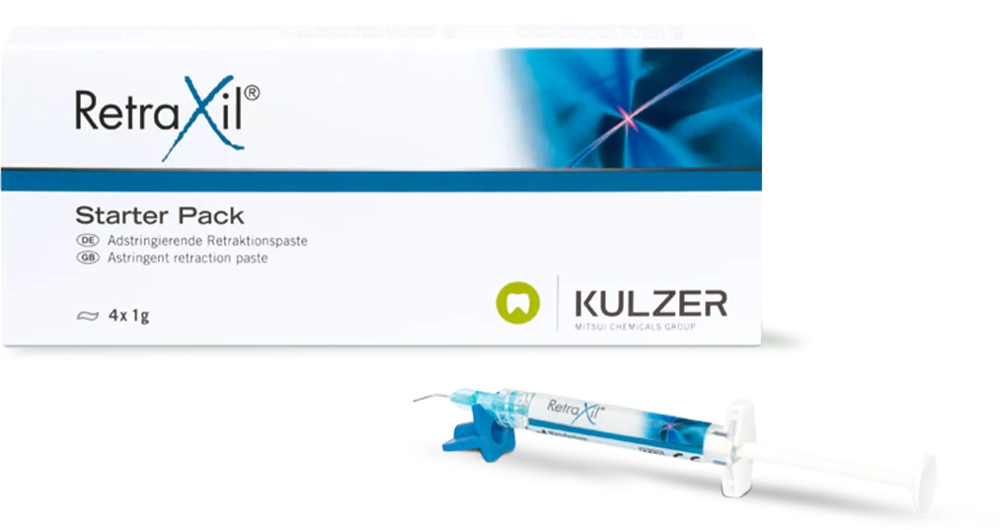
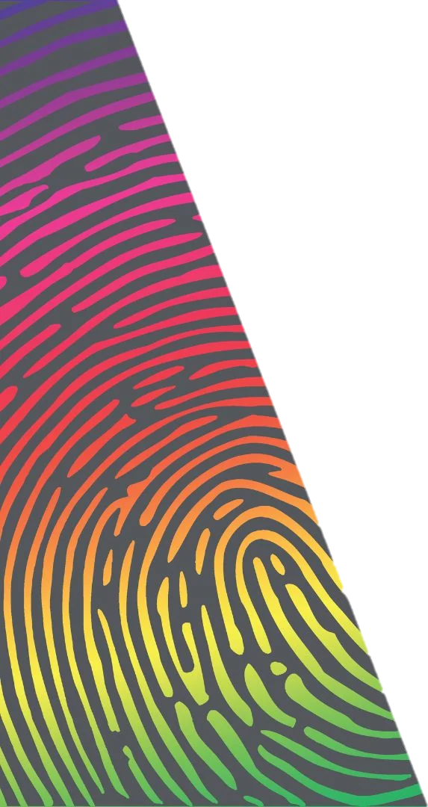
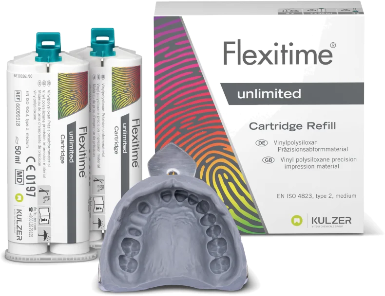

[Your name]
Lab Manager at Dr. Classi’s clinic
Brazil
[Dental degree / training in Brazil, years of clinical experience]
Today
Lab Manager at Dr. Classi’s clinic, working on both the clinical and the lab side of every case
ChairsideLab
Our clinical experience with Kulzer materials
One case, start to finish: RetraXil blue, Flexitime unlimited and iCEM Universal Plus
[Your name]
Lab Manager, [clinic name]
Lab Manager at Dr. Classi’s clinic
[Dental degree / training in Brazil, years of clinical experience]
Lab Manager at Dr. Classi’s clinic, working on both the clinical and the lab side of every case
for the invitation
Dr. Classi
for sharing this case
Everything you’ll see today is our honest, hands-on experience.
A precise impression is the foundation of a well-fitting restoration
Blood and fluid ruin both analog and digital impressions
The sulcus must open enough for material to reach the margin
Margins and fine preparation details must be recorded accurately
Case 1Zirconia crown
Case 2Lithium disilicate (e.max) crown
Same protocol from start to finish
blue

Mechanical + chemical retraction
Elastic, cord-like paste temporarily displaces the gingiva
15% aluminum chloride for hemostasis
2min
Dwell time, then rinse completely
0.9mm
Ultra-thin cannula reaches deep, narrow sulcus and interproximal areas
0
Adrenaline, so no risk of systemic side effects
Vivid blue for high contrast against the gingiva
In both cases we used no retraction cord
Apply until the excess wells out of the sulcus all around the tooth
Leave it for 2 minutes, never longer
Rinse with air-water spray and suction: open, dry, blood-free sulcus
Material: [Kulzer bite registration material name]


multiple viscositiesimpression unlimited° impression unlimited° impression unlimited° impression unlimited° impression unlimited°
Flexitime unlimited merges the benefits of polyether and A-silicone in one product
One viscosityfor the whole impression, in both tray and syringe
Monophase and 2-phaseworks for both techniques
High flowability in the sulcusyet stable in the tray, no running toward the throat
Hydrophilicityon polyether level
Neutral taste, easy removalmore comfortable for the patient
Flexitime unlimited, Kulzer data
160%
Elongation at break
Tear resistance close to polyether
57Shore A
Hardness
Easier to remove from the mouth while keeping margins accurate
99.8%
Recovery after deformation
Minimal distortion on removal
5.6mm
Shark-fin flow
Reaches the sulcus, fewer voids
~7%
Flowability change
Stable flowability over time, from 30 s to 90 s
Real “Snap-Set”
Flexible handling time, 1:00 to 2:30 min
You choose the working time. The time in the mouth stays short.
Fully cured once setting time is up, with no prolonged deformable phase.
No rushing the syringe step, and the patient doesn’t pay for it with a longer time in the mouth.
Tray loaded with Flexitime unlimited from our automix machine
Same material injected around the prep with the dispensing gun
As dentists
As a lab
Case 1Zirconia crown
Case 2e.max crown
Impressions
Stone models
Zirconia crownCase 1
e.max crownCase 2
No primer. For enamel, dentin, metal, zirconia, alumina
With iCEM Universal Primer. Required for glass/silicate ceramics (e.max) and resin-based materials
No separate silane step for e.max
| Substrate | Adhesive modewith iCEM Universal Primer | Self-adhesive modeno primer |
|---|---|---|
| Enamel | ||
| Dentin | ||
| Metal | ||
| Zirconia Case 1 | ||
| Alumina | ||
| Glass/silicate ceramics (e.max) Case 2 | primer needed | |
| Resin-based | primer needed |
We prefer to use the primer in every case, for extra bond strength
Cleaner margins, less chair time
Flows under pressure, doesn’t run
Over time
Crowns
Inlays
Onlays
Veneers
Zirconia on titanium
The materials delivered everything they promised
Since then, these are the materials we use
Flexitime Light Flow kept only for specific cases that need more flow
Thank you
[Contact and social media]
Turn your phone sideways for a bigger view. Swipe to change slides.
→Next ←Previous
FFull screen
NSpeaker notes
PPresenter window
GAll slides
HomeFirst slide EndLast